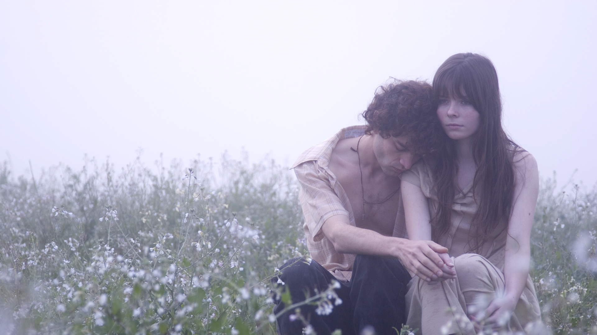
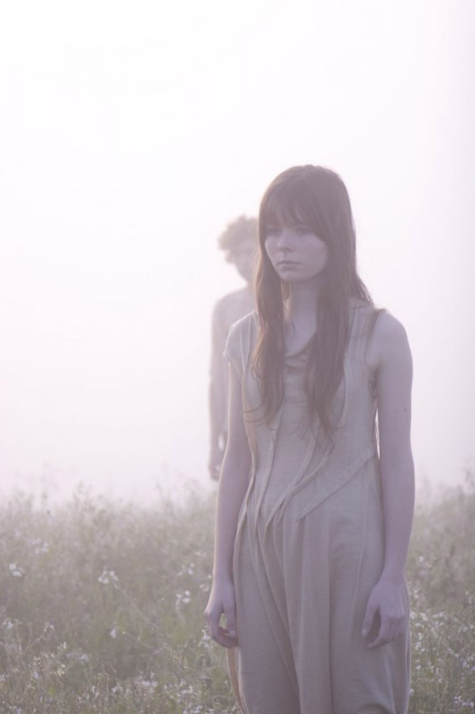

Os famosos
e os duendes da morte
Mãe, não fica triste. Não te desespera.
Não pensa que eu não te amo.
Não pensa que eu sou egoísta e que eu
não penso em ti.
Não pensa que eu não imagino quanto
tu sofre com todas as coisas ruins que
parecem que só acontecem contigo.
Às vezes eu queria que tu fosse mãe de
qualquer outro menino dessa cidade.
Acho que tu teria mais chances de ser
uma mãe feliz.
Nada é para sempre. Se eu tô indo, não é
culpa tua. Eu sei que eu faço um monte
de coisas que tu não acha legal. Eu tam-
bém não acho legal,mas eu faço.
Ninguém sabe tudo sobre ninguém. Nem
sei se algum dia tu vai achar esse vídeo,
perdido aqui no infinito. (CONT.)
Mas se tu tiver me assistindo e sentir sau-
dade, deita na minha cama e olha para o
teto do meu quarto.
Tu vai ver, talvez pela primeira vez, que as
estrelas que o pai colou não estão mais lá.
Faz tempo que isso aconteceu. Chove
em algum lugar toda vez que eu sinto
saudade, mas algumas coisas ficam mais
bonitas quando viram lembrança.
A última estrela eu levo comigo até quan-
do eu voltar e te abraçar de um jeito mais
forte do que tu vai poder entender.
Cuida bem da Inês, tá? Eu já sei que ela
cuida bem de você.
Se tu quiser entender mais sobre mim,
senta no chão do meu quarto, encoste
na minha cama e escuta essa música. Essa
música que eu vou tocar para ti.
Não sei se tu já ouviu ela. É do teu tempo.
Ela diz muita coisa, muita coisa sobre mim
